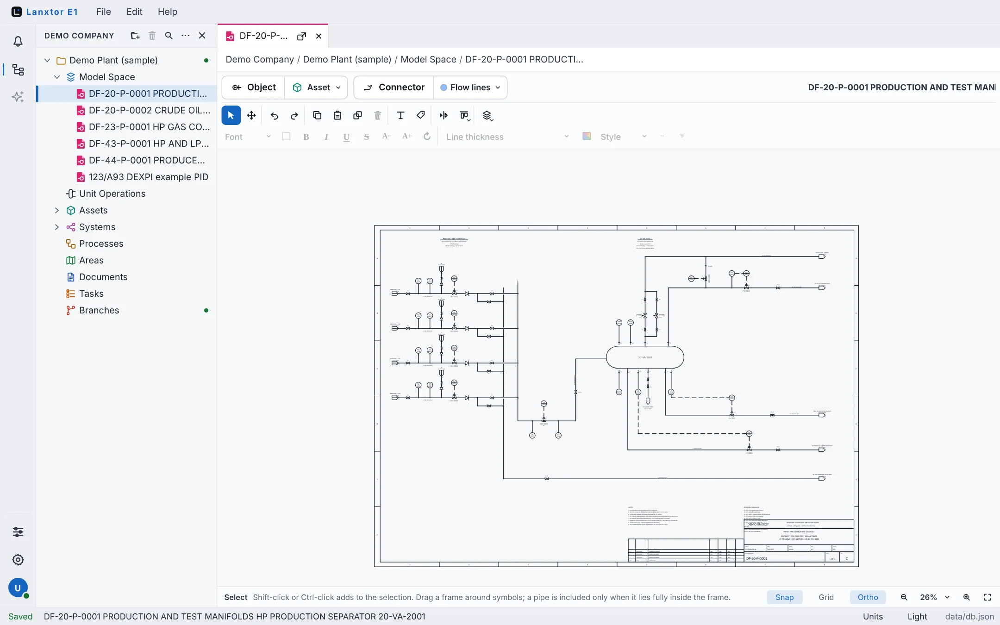
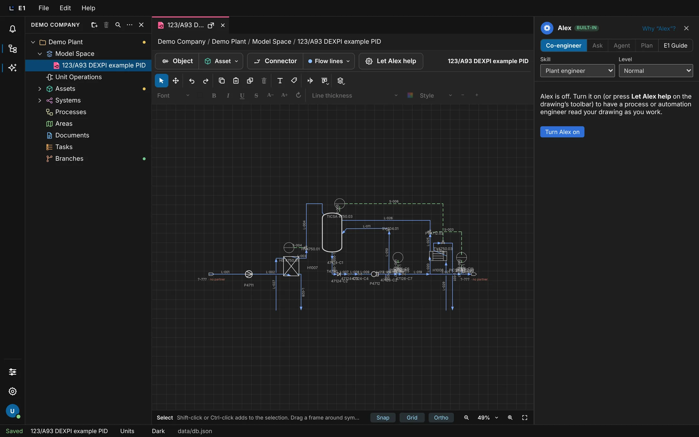
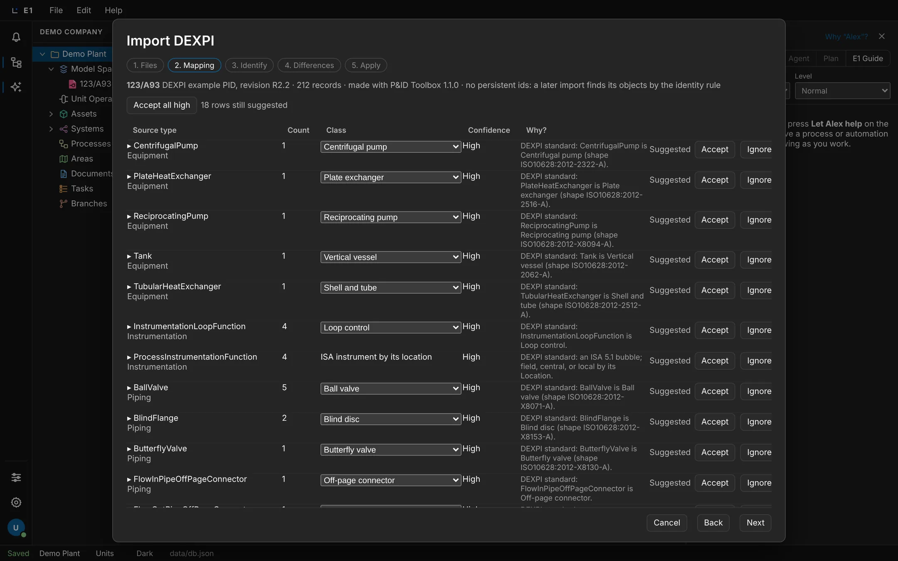
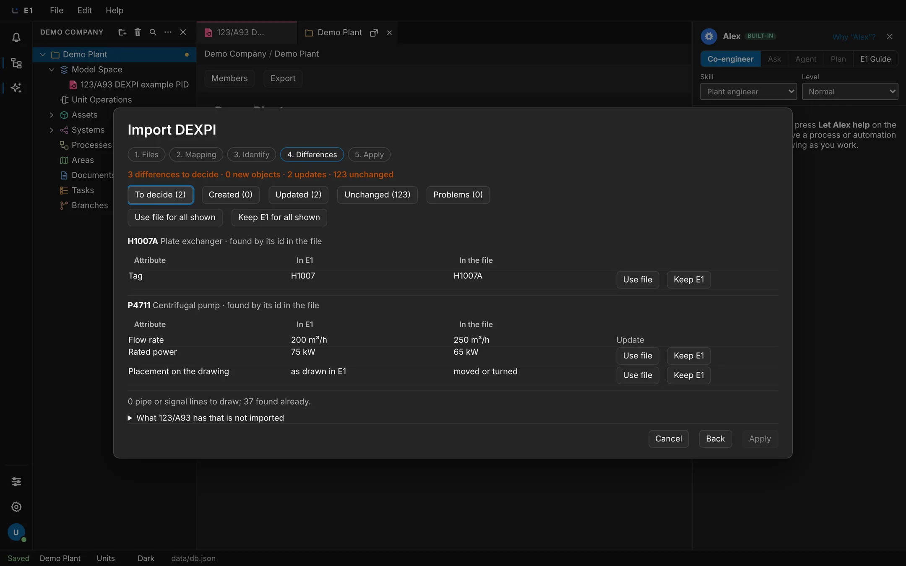

Academy / User guide / Projects and the explorer
3. Projects and the explorer
Create, rename, arrange and delete projects and folders, the sections of a project, the Bin, searching and dragging in the explorer.
About this guide
This guide covers the explorer, the tree on the left of the E1 window: your projects, how you arrange them in folders, the nine sections every project has, the folders and 2D spaces inside the sections, the Bin, searching the tree and dragging rows around.
The typical workflow
- Create a project and rename it.
- Get to know the sections of a project and what clicks, double-clicks and marks in the tree do.
- Make folders and 2D spaces inside the sections, and move them by drag and drop.
- Find things with the explorer search, and fold the tree with the explorer header buttons.
- Arrange your projects with project folders and Move up / Move down, and use the organization menu.
- Delete a project and restore it from the Bin, and work with the Deleted bin and the Voided bin inside a project.
- See what is planned for the Branches section.
Before you start
E1 is open and you know the parts of the window (the E1 window). The explorer is shown; if it is hidden, click the tree icon Explorer on the left rail. Making objects inside the sections is described in Objects, attributes and tags.
Create a project
A project holds one plant or job: its drawings, equipment, lists, documents and tasks. A new project is created at once with its nine sections, named "New project", and you rename it afterwards.
- Where
- Explorer header → New project (the folder icon with a plus); also File → New project, More explorer actions (…) → New project, the organization menu → New project, and right-click a project folder → New project
- Who
- A license (without one you can only view)
- Before you start
- The explorer is shown.
Steps
| # | Action | Expected result |
|---|---|---|
| 1 | Click New project in the explorer header. | A new row New project appears in the tree and is selected. If that name is taken it is "New project 2", then "New project 3", and so on. The status bar shows Saved. |
| 2 | Expand the new project with its arrow. | It contains the nine sections in this order: Model Space, Unit Operations, Assets, Systems, Processes, Areas, Documents, Tasks, Branches. |
| 3 | Choose File → New project. | One more project appears, selected, with the next free name. |
| 4 | Right-click a project folder (see project folders) → New project. | The new project is created inside that folder. |

File → New project shows the shortcut Ctrl+N (⌘N), but the key does nothing in E1 today; the browser may run its own action (a new window). Use the button or the menu.
Give the project its name next: Rename a project. Its settings (content packages, drawing options, tag rules) are under File → Project settings…; see Tag rules.
Rename a project
Rename a project in the tree with F2, or on its data sheet. The new name shows everywhere at once: the tree, the path bar and the tab titles, and it is kept after a reload.
- Where
- Select the project row and press F2; or double-click the project and edit its name on the data sheet
- Who
- A license and a project role that may edit the project
- Before you start
- The project exists in the explorer.
Steps
| # | Action | Expected result |
|---|---|---|
| 1 | Click the project row once. | After a short moment (about a quarter of a second, so that a double-click can win) the row is selected. |
| 2 | Press F2. | The name turns into a text box Rename. |
| 3 | Type a new name, for example "Demo Plant", and press Enter. | The row shows the new name. The status bar shows Saved. |
| 4 | Press F2 again, type something and press Esc. | The rename is cancelled; the name stays as it was. |
| 5 | Reload the page (F5 (⌘R)). | The project still has the new name. |
| 6 | Double-click the project row. | The project's data sheet opens as a tab. Change the name in its name field and press Tab: the tree shows the new name. |
The sections of a project
Every project has the same nine sections, always in the same order. Each section holds one kind of thing, and right-clicking a section offers exactly what can be made there. The sections cannot be added, removed or reordered.
- Where
- Explorer → expand a project
- Who
- Anyone who can open the project
- Before you start
- A project exists.
What each section holds
| Section | What it holds | Right-click → New |
|---|---|---|
| Model Space | The drawings: 2D spaces and their folders | New 2D space |
| Unit Operations | Process steps | New unit operation… |
| Assets | Equipment, instruments and their connections. The group Lines lists every drawn pipe run, signal, cable and wire as an object. | New asset… |
| Systems | The functional breakdown: systems and functions | New system… |
| Processes | Steps, fluids and operating cases | New process… |
| Areas | Site, plant, unit, room, cabinet | New area… |
| Documents | Drawings, lists and datasheets as issued documents | New document… |
| Tasks | Engineering work tied to objects | New task… |
| Branches | Working branches of the plant model (planned) | New branch (opens Under construction) |
Steps
| # | Action | Expected result |
|---|---|---|
| 1 | Expand a project. | The nine sections in the order of the table above. There is no Lines section and no "Workspace" row. |
| 2 | Expand Assets. | The project's equipment, and at the end a group Lines. |
| 3 | Right-click Assets. | A menu with New asset…, New folder and Query ▸. |
| 4 | Right-click Systems → New system…. | A window New object in Systems opens. Click Cancel. |
| 5 | Double-click Model Space. | Its page opens with the heading "Model Space" and the list of its 2D spaces. An empty Model Space says "No 2D spaces yet." |
| 6 | Click an empty section such as Areas in a new project. | The click opens its page; a double-click on a section other than Model Space does nothing more. The page says "Nothing in this section yet." The page has a toolbar with the section's New … button, New folder, Import and Export. |

Marks on sections: Documents shows "Updated" when a document has a revision you have not seen yet; Tasks shows "Open tasks: N". The toolbar of the Tasks page has a working filter All / Open / Done.
Review check A1 still lists "Workspace" and "Lines" among the sections. Since 2026-11-07 there is no Workspace row (the explorer header names the organization instead), and Lines is a group under Assets, not a section. The filter All / Drawings / Lists / Datasheets on the Documents page only changes its label and opens Under construction.
Rows, clicks and marks in the explorer
A click selects a row, a double-click opens it, and only the arrow expands or collapses it; a row you collapse stays collapsed, also after a reload. Small marks at the end of a row tell you that something needs your attention, and a parent row rolls them up.
- Where
- Explorer
- Who
- Anyone who can open the project
- Before you start
- A project with a 2D space and some objects.
What a double-click opens
| Row | Opens |
|---|---|
| Project | Its data sheet |
| Model Space | Its page with the list of 2D spaces |
| 2D space | Its drawing |
| Object | Its object window (on the data sheet when the class has one) |
| Drawing shortcut under an object ("2D space, drawing") | That drawing with the object in view (also Enter) |
| Reference (a related object shown with a link mark) | The referenced object |
Steps
| # | Action | Expected result |
|---|---|---|
| 1 | Click a section name (not its arrow). | The row is selected and its page opens; it does not expand. |
| 2 | Click the arrow in front of it (Expand name). | The row expands; the arrow now reads Collapse name. |
| 3 | Click the arrow of Model Space (Collapse Model Space), then reload the page. | Its 2D spaces are hidden, and Model Space is still collapsed after the reload. A 2D space has no arrow of its own: the objects drawn on it are listed under Assets. |
| 4 | Expand Model Space again and double-click a 2D space under it. | The drawing opens as a tab and the path bar shows organization / project / Model Space / 2D space. |
| 5 | Expand an object under Assets that is drawn on a 2D space and double-click its drawing shortcut. | That drawing opens with the object in view. |
| 6 | Hover a mark at the end of a row. | A tooltip explains it (see the list below). |
| 7 | Click a mark on an object row. | The Tag… dialog of that object opens, whatever the mark says (see Set a manual tag with Tag…). |
| 8 | Hold Ctrl (⌘ on a Mac) and turn the mouse wheel up twice over the explorer. | The tree gets larger and "125%" shows for a moment at its top right. The explorer keeps its width: the rows are laid out again inside it, and long names end in "…". The drawing keeps its own zoom. |
| 9 | Reload the page, click in the tree and press Ctrl+0. | After the reload the tree is still at 125%; Ctrl+0 brings it back to 100%. |
The marks and their tooltips: "Modified since document" and "Added since document" (changed after a revision was issued), "Needs review: N unresolved comment(s)", "Open tasks: N", "Tag pending: an input of its tag rule is missing", "Tag out of date: an input of its tag rule changed", "Updated" (on Documents) and "Open branch" (on Branches). A collapsed parent shows "Needs attention", "Modified", "Added" or "In review" for what is inside.

Keys in the tree: F2 renames the selected project or object (not a 2D space or folder: use right-click → Rename for those), Delete or Backspace deletes it (see Delete a project and Delete an object), and Esc clears projects picked with Ctrl-click.
Larger text in the explorer: Ctrl and the mouse wheel (or a pinch on a touchpad) zoom the tree from 80% to 200% in steps (80, 90, 100, 110, 125, 150, 175, 200%). With the focus in the tree, Ctrl and + or − do the same and Ctrl+0 goes back to 100% (elsewhere these keys zoom the drawing). The size is remembered on this computer.
Folders and 2D spaces inside a project
Every section takes folders, and folders nest as deep as you like. In Model Space you make the 2D spaces you draw on. Folders and 2D spaces are renamed in place, and deleting them moves them to the project's Bin, from where they can be restored.
- Where
- Right-click a section or a folder → New folder; right-click Model Space or a folder in it → New 2D space
- Who
- A license and a project role that may edit the project
- Before you start
- A project is expanded in the explorer.
Steps
| # | Action | Expected result |
|---|---|---|
| 1 | Right-click Model Space → New 2D space. | A 2D space "2D space" appears in rename mode. |
| 2 | Type "2D space 1" and press Enter. | The 2D space is named "2D space 1" and opens as a tab whose title shows organization / project / Model Space / 2D space 1 when you hover it. |
| 3 | Right-click Model Space → New folder, type "Area A", press Enter. | A folder "Area A" appears in Model Space. |
| 4 | Right-click the folder "Area A". | Exactly these items: New 2D space, New folder, Rename, Void, Delete, Query ▸. |
| 5 | Right-click "Area A" → New folder, then in that folder New folder again. | Folders nest three levels deep. |
| 6 | Right-click "2D space 1" → Rename, type another name, press Esc. | The rename is cancelled; the name stays "2D space 1". |
| 7 | Right-click "2D space 1" → Delete. | No question is asked. The 2D space disappears from Model Space, and a Bin row appears at the end of the project with the 2D space in its Deleted bin. |
| 8 | Right-click Assets → New folder. | A folder appears under Assets. Every section takes folders the same way. |
The right-click menu of a 2D space has Rename, Data sheet, Query ▸, Void and Delete. A folder in another section offers that section's New … item instead of New 2D space. Drawing on a 2D space is described in the 2D space view.
Move rows by drag and drop
Drag 2D spaces and folders into folders or between their neighbours, drag objects to where their class may live, and drag projects into project folders. E1 refuses a drop that does not fit; nothing happens then.
- Where
- Explorer, with the mouse
- Who
- A license and a project role that may edit the project (moving projects is personal and needs no role)
- Before you start
- Model Space has two 2D spaces ("2D space 1", "2D space 2") and two folders ("Area A", "Area B").
Steps
| # | Action | Expected result |
|---|---|---|
| 1 | Drag "2D space 1" onto the folder "Area A". | 2D space 1 moves inside Area A. |
| 2 | Drag the folder "Area B" onto "Area A". | Area B moves inside Area A. |
| 3 | Drag "2D space 2" just above "2D space 1". | The order inside Area A is 2D space 2, 2D space 1, Area B. |
| 4 | Drag "2D space 1" onto a folder under Assets. | The drop is refused; nothing changes. |
| 5 | Drag a pump from Assets onto a Model Space folder. | The drop is refused; nothing changes. |
| 6 | Drag a row and hold it over a collapsed folder for about half a second. | The folder expands so that you can drop inside it. |
2D spaces and folders stay within their own section, and a folder cannot be dropped into its own sub-folder. An object can be dropped only on a section or folder that its class may live in (see Move an object). Dropping an object on a 2D space's drawing places it there instead.
Search the explorer
The explorer search filters the tree to the rows whose name or attribute values match what you type, and also finds objects by tag, name, line number or any attribute value in every project you may open, even ones that are not expanded. A value with a unit is found whatever unit it was entered in: 24 volt finds 24 V and 0.024 kV.
- Where
- Explorer header → Search (magnifier)
- Who
- Anyone who can open the project
- Before you start
- A project with objects such as Pump1 and Pump2.
Steps
| # | Action | Expected result |
|---|---|---|
| 1 | Click Search in the explorer header. | A box "Search tags, names and values" appears under the header and has the focus. |
| 2 | Type pump2. | The tree shows Pump2; Pump1 and other rows that do not match are hidden. A row also matches when one of its attribute values contains the text. |
| 3 | Wait a moment. | A list "Found in the projects" shows the matches with tag, name and project. With none it says "Nothing found in the projects". |
| 4 | Type a value instead, such as SS316 or 24 volt. | "Found in the projects" lists the objects with that value, each with the value that matched, such as "Rated voltage: 24 V". A number with a unit finds the same quantity in any unit of its kind (24 V, 0.024 kV). |
| 5 | Click a match in that list. | The object opens. |
| 6 | Type a word that matches nothing, such as xyzzy. | The tree says "No matches". |
| 7 | Press Esc. | The box closes and the whole tree is back. Clicking Search again does the same. |
The project-wide list starts from two typed characters and shows the 20 best matches of all projects: tags and names first, then values. The tree itself filters only the rows the explorer has loaded; "Found in the projects" searches every object.
The explorer header: expand, collapse and more
The header at the top of the explorer names your organization and carries the buttons for the whole tree: new project, delete, search, a menu with more actions, and hide.
- Where
- The top of the explorer
- Who
- Everyone
- Before you start
- A project is expanded in the explorer.
From left to right: the organization's name (a button that opens the organization menu), New project, the trash button (Delete project, disabled with the tooltip "Select a project to delete" until a project is selected), Search, More explorer actions (…) and × Hide explorer.
Steps
| # | Action | Expected result |
|---|---|---|
| 1 | Click More explorer actions (…). | A menu with New project, Expand all, Collapse all, Retag… and Delete project. |
| 2 | Choose Collapse all. | Only the project rows remain. |
| 3 | Open the menu again and choose Expand all. | Everything is expanded again; objects such as Pump1 are visible. |
| 4 | Click × Hide explorer. | The explorer is hidden. Click the tree icon Explorer on the left rail to bring it back. |
Retag… is described in Retag with preview.
Arrange projects in folders, Move up and Move down
Put your projects in folders and in the order you like. The arrangement is your own: it is saved with your view, it changes nothing in the projects and nothing for anyone else.
- Where
- Organization menu → New folder; right-click a project → Move up / Move down; right-click a project folder
- Who
- Everyone (the arrangement is personal)
- Before you start
- At least three projects.
Steps
| # | Action | Expected result |
|---|---|---|
| 1 | Click the organization name in the explorer header → New folder. | A row "New folder" appears in rename mode. |
| 2 | Type "Clients" and press Enter. | A project folder "Clients" at the top level. |
| 3 | Right-click the third project → Move up. | It swaps places with the project above it. |
| 4 | Right-click the first project. | The menu shows Query ▸, Move up (disabled), Move down and Delete. Choose Move down: it moves one place down. |
| 5 | Drag a project onto "Clients". | It moves into the folder (expand "Clients" to see it). |
| 6 | Right-click "Clients" → New folder, name it "Archive". | A sub-folder "Archive" inside Clients. |
| 7 | Wait a second and reload the page. | The same order and folders. |
| 8 | Right-click "Archive" → Delete folder. | No question is asked. The folder is gone and anything that was in it moves up to where the folder was. |

The right-click menu of a project folder has New project, New folder, Rename, Move up, Move down and Delete folder. Dragging a project onto the empty part of the tree moves it back to the top level.
Delete a project and restore it from the Bin
A deleted project goes to the Bin at the end of the tree, from where you can restore it. Only Delete permanently… in the Bin removes it for good, with everything in it.
- Where
- Select the project and click the trash button in the explorer header; or right-click the project → Delete; or More explorer actions → Delete project; or select it and press Delete
- Who
- A project role that may delete the project
- Before you start
- A project you may delete, for example a new one.
Steps
| # | Action | Expected result |
|---|---|---|
| 1 | Right-click the project → Delete. | The browser asks: Delete project "name"? It goes to the Bin, from where it can be restored. |
| 2 | Click OK. | The project is gone from the projects. A top-level row Bin appears after the projects. |
| 3 | Expand Bin. | The project is listed inside. |
| 4 | Right-click the project in the Bin. | Exactly two items: Restore and Delete permanently…. |
| 5 | Choose Restore. | The project is back among the projects. The Bin row disappears when it is empty. |
| 6 | Delete the project again, expand Bin, right-click it → Delete permanently…. | The browser asks: Delete project "name" permanently, with everything in it? It cannot be restored. |
| 7 | Click OK. | The project is gone for good. |
Several projects at once
| # | Action | Expected result |
|---|---|---|
| 1 | Click a project, then Ctrl-click (⌘-click) a second one. | Both are picked. The trash button's tooltip reads Delete 2 projects. Shift-click picks a range. |
| 2 | Click the trash button. | The browser asks "Delete 2 projects? They go to the Bin, from where they can be restored." with a list of their names. Esc instead clears the picks. |
This Bin at the end of the tree is for projects. Things deleted inside a project go to that project's own Bin: see The project Bin.
The project Bin: Deleted bin and Voided bin
Inside each project, a group Bin collects what you deleted (Deleted bin) and what you voided (Voided bin), sorted by section. Deleted things can be restored or deleted permanently; voided things can only be unvoided.
- Where
- Explorer → the project → Bin (shown only when something is in it)
- Who
- A license and a project role that may edit the project
- Before you start
- A project with valves V9 and V10 under Assets, or any objects of your own.
Steps
| # | Action | Expected result |
|---|---|---|
| 1 | Select V10 under Assets and press Delete. | V10 is gone from Assets. A Bin row appears in the project, collapsed. |
| 2 | Expand Bin → Deleted bin → Assets. | V10 is listed there. |
| 3 | Right-click V10 in the bin. | The items Open, Restore and Delete permanently…. |
| 4 | Choose Restore. | V10 is back under Assets (and on its 2D spaces where it was drawn). The Bin disappears when it is empty. |
| 5 | Delete V9 and V10, then right-click Deleted bin. | The item Empty deleted bin… (disabled when the bin is empty). |
| 6 | Choose Empty deleted bin…. | The browser asks "Delete the 2 items in the deleted bin permanently? They cannot be restored." After OK the bin is empty and the Bin row disappears. |
| 7 | Right-click an object → Void, then expand Bin → Voided bin and right-click it there. | Only Unvoid is offered: nothing voided can be deleted. |
Selecting an item in the Deleted bin and pressing Delete (or Backspace) does the same as Delete permanently…. For a 2D space or folder in the Deleted bin, Delete permanently… asks Delete 2D space "name" permanently? It cannot be restored. or Delete folder "name" permanently with everything inside it? It cannot be restored. For an object it opens a preview of what goes with it: see Delete an object.
The sample project: Demo Plant
E1 comes with a sample project, Demo Plant (sample). It holds the Demo Field, a fictional oil and gas production facility of the fictional operator Demo Energy, drawn as plant documentation on five P&IDs: production and test manifolds with the HP production separator, crude oil heating with the LP separator and export pumps, HP gas compression, the flare system and produced water treatment. Beside it is the DEXPI reference P&ID (DEXPI Specification 2.0, dexpi.org). Both were brought in by E1's own DEXPI import, with their equipment, pipelines, valves, instruments, loops and values. Every new organization starts with it, and so does a new desktop install. It is yours to try anything on: change values, move symbols, delete objects. Delete the project when you no longer need it, and add a fresh copy whenever you like. The user guides, the E1 Guide and the training videos use it.
- Where
- Explorer → Demo Plant (sample); a new copy from File → Generate DEXPI sample project…
- Who
- The owner of a new organization has it as its Project administrator; adding a copy needs the permissions to create a project and to import data
- Before you start
- Nothing: it is there when you first sign in.
Steps
| # | Action | Expected result |
|---|---|---|
| 1 | Expand Demo Plant (sample) in the explorer, then Model Space. | The 2D spaces DF-20-P-0001, DF-20-P-0002, DF-23-P-0001, DF-43-P-0001 and DF-44-P-0001 of the Demo Field, and 123/A93 DEXPI example PID. The project's Description says it is a sample, that the plant is fictional, and where the reference P&ID comes from. |
| 2 | Double-click DF-20-P-0001. | The P&ID of the production and test manifolds and the HP production separator 20-VA-2001: four wells with their chokes, the headers, the separator with its gas, oil and water outlets, control loops, trips, relief valves and the blowdown valve, with its border, title block, revision block and notes. |
| 3 | Double-click 123/A93 DEXPI example PID. | The P&ID opens as the DEXPI reference P&ID draws it: pumps P4711 and P4712, heat exchangers H1007 and H1008, tank T4750, their pipe runs, valves, instruments and signal lines, in the file's colours, with the nozzle and line labels, the equipment data tables, the border and the title block. Each instrument shows its letters and loop number inside its circle. |
| 4 | Expand Assets and double-click P4711. | The pump's page: Centrifugal pump, with Flow rate 200 m³/h, Head 10 m and Rated power 60 kW on Attributes. |
| 5 | Change a value, then press Ctrl+Z. | The value is saved, then back as it was. |
| 6 | Click File → Generate DEXPI sample project…. | "Generating the DEXPI sample project: E1 imports the Demo Field's P&IDs and the DEXPI reference P&ID into a new project. This can take a minute.", then a new project Demo Plant (sample) 2 is selected, as the first one was made. The other copies are left as they are. |
| 7 | To remove a copy, delete its project as any other. | The project and everything in it go; File → Generate DEXPI sample project… brings a fresh one back. |


Instrumentation, electrical and the other parts of the plant will be added to the sample over time; a copy you already have keeps what it had. An E1 server's operator can leave the sample out of new organizations (setting E1_SAMPLE_PROJECT=off).
Project templates: save a project as a template, start a project from one
A project template is a copy of a project kept to start new projects from. Save as template… on any project keeps a copy of it as it is now: its folders, 2D spaces and drawings, objects, relationships, tags, its settings (content packages, drawing, units, tag rules) and its shared queries. The templates are listed in Configuration → Project templates, apart from the projects. A new project is either blank or a copy of a template; the copy is a project of its own, so changing it never changes the template, and changing the project the template was saved from never changes the template either.
- Where
- Right-click a project → Save as template…, or File → Save project as template…; File → New project from a template…, or right-click the organization's name → New project from a template…; Configuration → Project templates
- Who
- Saving: the Export permission in the project and the permission to create projects. A new project from a template: the permission to create projects; you become its Project administrator. Deleting a template: whoever saved it, or an organization administrator.
- Before you start
- A project to keep as a template, for example Demo Plant (sample).
Steps
| # | Action | Expected result |
|---|---|---|
| 1 | Right-click Demo Plant (sample) in the explorer → Save as template…. | The Save as template dialog opens, with Template name set to the project's name and an empty Description. It says what is copied and what is not. |
| 2 | Type a name, for example Process unit, and a description, then click Save template. | The dialog closes and E1 says "Saved the template Process unit. Find it in Configuration → Project templates." The project itself is not changed, and no new project appears in the explorer. A name already taken by a template gets " 2", " 3"…. |
| 3 | Open Configuration (the sliders on the left rail) → Project templates (under Projects). | A card for Process unit: its description, how many objects and sheets it holds, the project it was saved from and the day. Each card has New project from this template and Delete; the head has Save a project as template… and New project…. |
| 4 | Click File → New project from a template…. | The New project dialog: Blank project and each template (its name, description, objects and sheets), and Project name. |
| 5 | Choose Process unit. | Project name becomes Process unit; type another name if you like. |
| 6 | Click Create project. | A new project with that name (" 2" added when the name is taken) appears among the projects and is selected, with everything the template holds: the 2D space 123/A93 DEXPI example PID, P4711 with its values, the pipes still connected. |
| 7 | Change a value of P4711 in the new project. | Only the new project changes: Demo Plant (sample) and the template keep their values, and the next project made from the template has the template's values. |
| 8 | In Configuration → Project templates, click Delete on the card and confirm. | The template is gone from the list and from New project. The projects made from it stay as they are. Someone who did not save it, and is not an organization administrator, is told only whoever saved it or an organization administrator can delete it. |
Choosing Blank project in the New project dialog makes the same empty project as New project, with the name you typed. A template belongs to the organization: everyone who may create projects sees it, and deleting the project it was saved from keeps it.
A template does not copy the project's history, comments, tasks, document revisions, attached files or who has access. A template holds what the person who saved it could see: values hidden from them are not in it.
Import a DEXPI P&ID
DEXPI is the exchange format P&ID tools use. File → Import → DEXPI P&ID… reads one or more DEXPI 2.0 files, proposes how their equipment, piping and instruments map onto E1's classes and attributes, and shows every change before anything is stored. An import always imports and updates: import a revised file again and the objects already there are updated, never duplicated. A value someone changed in E1 is never overwritten without your decision.
- Where
- File → Import → DEXPI P&ID… (for the project selected in the explorer)
- Who
- The Import data permission in the project (Project administrator and Lead engineer have it), and the permissions of the changes the import makes
- Before you start
- A project selected in the explorer, and a DEXPI 2.0 file, for example the DEXPI reference P&ID (DEXPI Specification 2.0, dexpi.org).
Steps
| # | Action | Expected result |
|---|---|---|
| 1 | Click the project in the explorer, then File → Import → DEXPI P&ID…. | The Import DEXPI dialog opens on its first step, Files. |
| 2 | Click Add files… and pick one or more DEXPI files (up to 50 MB each). | Each file is listed with its size; Remove takes one off the list. |
| 3 | Click Next. | The Mapping step: the drawing (for the reference P&ID "123/A93 DEXPI example PID, revision R2.2 · 212 records · made with P&ID Toolbox 1.1.0") and one row per kind of thing in the file, with the E1 Class proposed, its Confidence and Why?: for CentrifugalPump "DEXPI standard: CentrifugalPump is Centrifugal pump (shape ISO10628:2012-2322-A)". |
| 4 | Click a source type's name. | Its fields open below it: each with samples from the file and the Attribute it fills (TagName fills Tag, DesignVolumeFlowRate Flow rate), or Leave out. |
| 5 | Change a Class where you know better, for example another kind of pump, and Accept or Ignore each row, or click Accept all high. | The row says Accepted or Ignored. Next asks you to accept or ignore every row still suggested. |
| 6 | Click Next. | The Identify step: Identify objects by Tag (or Name, or Class and tag), and Use the files' own ids first ticked. |
| 7 | Click Check. | The Differences step. Nothing is stored yet. For a first import: "Nothing is left to decide. · 125 new objects"; Created lists them. |
| 8 | Click Apply, then Close. | "123/A93: 125 new objects…". The 2D space 123/A93 DEXPI example PID is under Model Space with the pumps, exchangers, tank, lines, valves and instruments; the pipelines and loops are under Assets and Systems. One Ctrl+Z takes the whole import back. |
| 9 | Change a value in E1 (for example P4711's Rated power), then import a revised file of the same drawing. | Differences says how many differences are left to decide. A value E1 still holds as it was imported is an Update; the value you changed shows In E1 and In the file with Use file and Keep E1, neither chosen. A moved symbol is a Placement on the drawing to decide too. |
| 10 | Decide each one (or Use file for all shown / Keep E1 for all shown), then Apply. | Apply is off until nothing is left to decide. The updates and your decisions are applied as one change; a value you kept is not asked again while the file says the same. |


E1 reads DEXPI 2.0 today; DEXPI 1.3 and 1.4 files, and Excel, DWG and PDF files, come next. The 2D space looks as the file draws it: the symbols take the file's places, sizes, colours and line widths, each tag sits where the file writes it, and the border, title block, data tables, nozzle, line and valve labels and flow arrows are kept as the 2D space's background. The background is drawn and plotted, but not selected or edited; the next import of the same file replaces it. A valve or fitting the file gives no tag shows none on the drawing. The dialog closes when you click outside it: use Cancel or Close.
A tag or a placement you keep in E1 is asked again at the next import of the same file; a value you keep is not.
Import Excel workbooks
Equipment lists, instrument indexes and data sheets often live in Excel. File → Import → Excel workbooks… reads one or more workbooks (.xlsx) or CSV files: each sheet becomes a kind of object (Pumps, Valves…), each column an attribute, each row an object found by its tag. It works like Import a DEXPI P&ID: objects already in the project are updated, the others are created, nothing is deleted, and a value E1 already holds from elsewhere is never overwritten without your decision.
- Where
- File → Import → Excel workbooks… (for the project selected in the explorer)
- Who
- The Import data permission in the project (Project administrator and Lead engineer have it), and the permissions of the changes the import makes
- Before you start
- A workbook with one sheet per kind of object and a header row: a Tag column, and one column per attribute. Put a unit in brackets after the header, such as Flow rate [m³/h] or Rated power (kW). Title rows above the header are fine.
Steps
| # | Action | Expected result |
|---|---|---|
| 1 | Click the project in the explorer, for example Demo Plant (sample), then File → Import → Excel workbooks…. | The Import Excel workbooks dialog opens on Files. |
| 2 | Click Add files… and pick one or more .xlsx or CSV files (up to 20 MB each), then Next. | The Mapping step: for each file its sheets and rows, and one row per sheet with the Class proposed by the sheet's name, its Confidence and Why?. A sheet without a table (a notes sheet) is left out and said so. |
| 3 | Check the class of each sheet. For a sheet named Pumps, E1 proposes the first kind of pump, Centrifugal pump, with Medium confidence: choose the kind you mean. | "Pumps is Pump, which E1 has in kinds: choose the kind…". |
| 4 | Click the sheet's name. | Its columns open below it, each with samples and the Attribute it fills: Tag fills Tag, Flow rate [m³/h] fills Flow rate. Choose another attribute, or Leave out. |
| 5 | Accept each sheet (or Ignore it), then Next and Check. | The Differences step. Nothing is stored yet. New objects are under Created; an object found by its tag lists the values that change. |
| 6 | Decide each difference under To decide: Use file or Keep E1. | A value E1 got from elsewhere (the DEXPI import, a person) is asked; a value the same workbook wrote last time is simply updated. Apply is off until nothing is left to decide. |
| 7 | Click Apply, then Close. | "demo-tag-list: 1 new object, 1 object updated…". The new objects are under Assets. One Ctrl+Z takes the whole import back. |
A cell that is not a valid value (text in a number column, a unit the attribute does not have) is left out and listed under "What … has that is not imported", with the row. A row with no tag and no name is left out too. Numbers may be written 1234.5, 1 234,5 or 12,5. An older .xls workbook: save it as .xlsx first.
The Import button of a section (Import a tag list from Excel) brings one tag list into that section; File → Import → Excel workbooks… reads whole workbooks for the project, one class per sheet, with the differences to decide.
Import a P&ID from CAD (DXF)
Many P&IDs were drawn in AutoCAD or a similar CAD program. File → Import → DXF drawing… reads one or more drawings saved as DXF and makes them E1 drawings with real objects: each block (a pump, a valve, a tank) becomes an object of the class it is named for or looks like, placed where it is drawn, and the lines on each layer become pipes, signals or cables connected to the symbols they end on. As with every import, a second import of a revised drawing updates what is there, and you decide every difference.
- Where
- File → Import → DXF drawing… (for the project selected in the explorer)
- Who
- The Import data permission in the project (Project administrator and Lead engineer have it), and the permissions of the changes the import makes
- Before you start
- The drawing saved as DXF (ASCII) from your CAD program. A DWG file: open it in your CAD program and use Save As → DXF; E1 recognizes a DWG file and says so. File → Import → DWG drawing… is in the menu too, but until E1 reads DWG itself it opens Under construction, which says the same.
Steps
| # | Action | Expected result |
|---|---|---|
| 1 | Click the project in the explorer, then File → Import → DXF drawing…. | The Import DXF dialog opens on Files. |
| 2 | Click Add files…, pick one or more DXF files (up to 50 MB each), then Next. | The Mapping step: for each drawing its units and its block references and lines; one row per block and one per layer with lines. |
| 3 | Check each block's Class and Why?. | A block is proposed by its name (VALVE_GATE is a Gate valve) and by its look, compared with E1's symbols: "PUMP is Pump; it looks like E1's Centrifugal pump symbol (100 % alike)". A block E1 cannot tell apart surely is Medium, with the other likely classes in the list. |
| 4 | Click a block's name. | Its attributes: TAG fills Tag, an attribute whose prompt names an E1 attribute (Flow rate) fills it. A block without a tag attribute takes a tag-like text beside it (XV-101). |
| 5 | Check each layer with lines: PROCESS or PIPE layers are proposed as Pipe run, SIGNAL or INSTR layers as Signal. Ignore the border and title block layer. | The rows say Accepted or Ignored. |
| 6 | Click Next, Check, then Apply. | A 2D space named after the file opens: the symbols where the blocks are, turned as they are drawn, joined by the runs. A line that ends on a symbol's side gets a nozzle there (N1, N2…). One Ctrl+Z takes the whole import back. |
Texts that are not a block's tag, hatches, dimensions and images are not imported; the dialog lists them under "What … has that is not imported". A block referenced again in a revised drawing is found by its tag and updated; one moved on the drawing is a Placement on the drawing for you to decide.
Import a P&ID from a PDF
Often the only copy of a P&ID you get is a PDF. When it was exported from CAD (a vector PDF), File → Import → PDF drawing… makes it an E1 drawing with real objects: E1 finds the symbols among the drawing's lines, groups the ones drawn alike, recognizes each group by its look against E1's symbols, takes the text beside a symbol as its tag, makes a pipeline from each line number, and reads solid lines as pipes and dashed lines as signals. Each page is a drawing. As with every import, you check the result and decide before anything is stored.
- Where
- File → Import → PDF drawing… (for the project selected in the explorer)
- Who
- The Import data permission in the project (Project administrator and Lead engineer have it), and the permissions of the changes the import makes
- Before you start
- A PDF exported from a CAD program. A scanned drawing (an image) cannot be read; E1 says so. Up to 50 MB and 50 pages per file. Import all the sheets of a P&ID set together: E1 learns the shapes they share, and a tag drawn on two sheets is one object.
Steps
| # | Action | Expected result |
|---|---|---|
| 1 | Click the project in the explorer, then File → Import → PDF drawing…. | The Import PDF dialog opens on Files. |
| 2 | Click Add files…, pick the PDFs of the set (or one PDF with many pages), then Next. | The Mapping step. A PDF has no blocks: each row is a group of shapes drawn alike (Shape 1, Shape 2…) with its picture, how many there are, the Class proposed and why, for example 2 shapes drawn alike; they look like E1's Centrifugal pump symbol. A bubble with ISA letters and a number (PT 1001) is proposed as an instrument; a box around a drawing number as an off-page connector. |
| 3 | Where E1 is unsure (Medium or Low), look at the picture and choose the class you mean, for example Vertical vessel for a shape that looks like a gas cylinder too. | The row says Accepted. |
| 4 | Check the line rows: Solid lines as Pipe run, Dashed lines (signals) as Signal. Click Accept all high, then Ignore the rest. | Every row still suggested is Ignored: stray marks and letters no text claimed are not imported. |
| 5 | Click Next, then Check. | The Differences step: each shape with the tag found beside it (P-201, XV-201), and a pipeline for each line number written along a pipe (0200-HC-1001-A1A), with its nominal size, fluid and pipe class. |
| 6 | Click Apply, then Close. | A 2D space per sheet opens: the symbols where they are, turned as drawn, connected by the lines. The border, title block and notes are not imported. One Ctrl+Z takes the whole import back. |
A PDF names nothing, so E1 knows a symbol only by its look: symbols that look alike are proposed with Medium confidence and the other likely classes in the list. Some CAD programs export their texts as strokes only; E1 reads those strokes as letters, learning the font from the texts it can read, so a tag may be misread where the font is unusual: check the tags in the Differences step. A tag beside two shapes of different classes stays with the first. Import the set again for a new revision: every drawing is found again, also an object drawn twice, and only what changed is shown; a drawing that moved is yours to decide. A shape that looks like no E1 symbol, texts that are not tags, and fills are listed under "What … has that is not imported". A DXF or DEXPI file of the same drawing, where you have one, holds more: see Import a P&ID from CAD (DXF).
Branches
The Branches section is where working branches of the plant model will live: you change a copy of part of the design and push it back when it is ready. Today the section takes folders only; its other controls open Under construction.
- Where
- Explorer → the project → Branches
- Who
- Everyone can see the section
Being planned (roadmap M8 Branches, not started). These controls are on screen but only open the Under construction tab today: right-click Branches → New branch; the section page's New branch button; its filter All / Procurement / Construction; and the green dot "Open branch" on the section row.
What you will be able to do
- Create a branch from part of the design and see it in the branch list (15.1).
- Work in a branch without others seeing your changes until you push them (15.2), pull others' changes and resolve conflicts object by object, also on the drawing (15.3, 15.4).
- Push the branch back and notify the others (15.5); open merge requests for a colleague to review (16.2).
- Use branch types such as design or commissioning, branch packages, and automatic resolution rules (16.1, 16.3, 16.4).
- Have Alex make its changes in your own branch (17.1, 17.2).